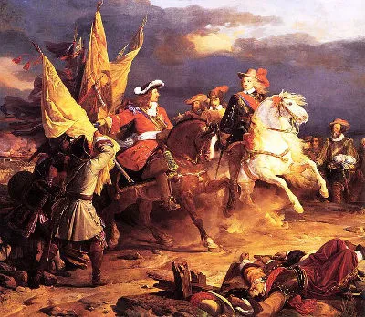
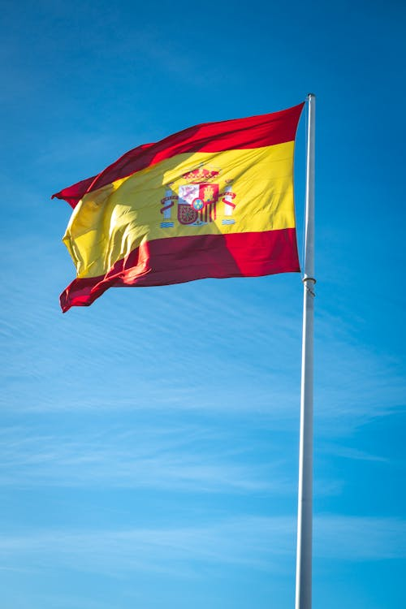

A história da Espanha é marcada pela fusão das culturas celta, romana e visigótica, seguida por oito séculos de domínio islâmico em Al-Andalus até a unificação do reino pelos Reis Católicos em 1492. Com a chegada à América, o país ergueu o primeiro império global da era moderna e viveu seu Século de Ouro, mas entrou em declínio devido a crises financeiras, guerras europeias e a perda de suas colônias ao longo do século XIX. No século XX, após sofrer uma violenta Guerra Civil e décadas de ditadura franquista, a Espanha realizou uma transição pacífica para a democracia, consolidando-se hoje como uma vibrante monarquia constitucional e membro fundamental da União Europeia.

Nações em uma só: Oficialmente multilíngue, o país possui o castelhano (espanhol) como língua principal, mas também o catalão, basco, galego e aranês, dependendo da região.
O país dos bares: A Espanha tem a maior concentração de bares e restaurantes da União Europeia, superando a marca de 280 mil estabelecimentos. É o principal ponto de socialização e consumo das famosas tapas.
Hino sem letra: O hino nacional espanhol (Marcha Real) é um dos poucos no mundo que possui apenas a melodia, sem qualquer letra oficial.
Reino do Azeite: O país é a maior potência mundial na produção de azeite de oliva, responsável por quase metade de todo o azeite produzido no planeta, com destaque para a região da Andaluzia.
